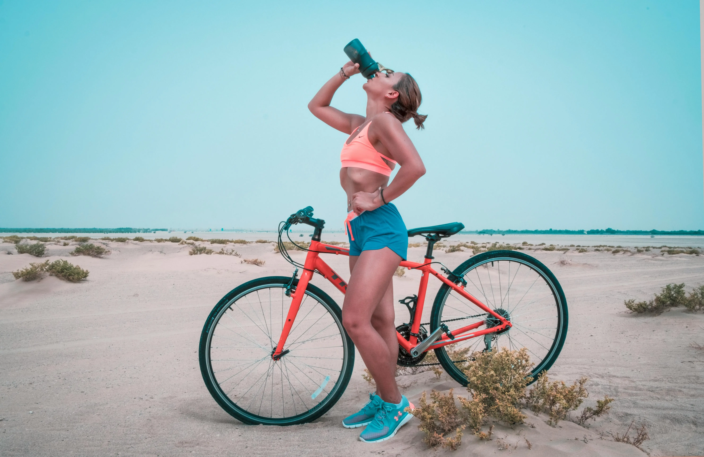
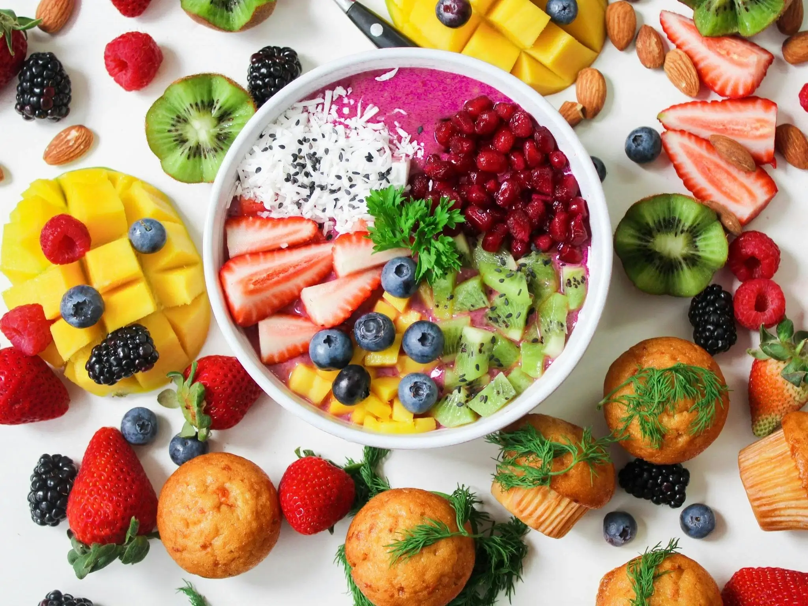

Hidup Lebih Berkualitas dengan Gaya Hidup yang Sehat
Panduan pemula untuk mulai berolahraga
Manfaat Olahraga (Workout Benefits)
Manfaat untuk kesehatan fisik (Physical Benefits)
- Olahraga teratur memperkuat jantung dan meningkatkan sirkulasi, sehingga mengurangi risiko dari penyakit jantung dan stroke.
- Aktivitas fisik membantu mengendalikan berat badan dengan membakar kalori dan membangun massa otot.
- Olahraga teratur memberi pengaruh seperti umur yang lebih panjang dengan mengurangi risiko banyak penyakit kronis
Manfaat untuk kesehatan mental (Mental Benefits)
- Aktivitas fisik merangsang produksi endorfin, yang merupakan pengangkat suasana hati alami, mengurangi tingkat stres dan kecemasan.
- Olahraga dapat membantu meringankan gejala depresi dan meningkatkan kesejahteraan suasana hati secara keseluruhan
- Mencapai tujuan kebugaran dan meningkatkan penampilan fisik dapat meningkatkan kepercayaan diri
- Aktivitas fisik membantu mengembangkan ketangguhan dan ketahanan mental, yang dapat bermanfaat dalam menjalani lika-liku kehidupan.

Manfaat menu makanan sehat (Healthy Meals Benefits)
Manfaat untuk kesehatan fisik (Physical Benefits)
- Peningkatan Gizi; Menyediakan vitamin dan mineral penting. Memastikan asupan makronutrien seimbang (protein, lemak, karbohidrat)
- Weight Management; Membantu menjaga berat badan yang sehat. Mengurangi risiko obesitas.
- Peningkatan Fungsi Kekebalan Tubuh; Menurunkan risiko penyakit kronis seperti penyakit jantung, diabetes, dan kanker. Mengurangi tekanan darah dan kadar kolesterol.

Manfaat untuk kesehatan mental (Mental Benefits)
- Peningkatan suasana hati; Menstabilkan kadar gula darah, mengurangi perubahan suasana hati. Meningkatkan produksi serotonin, hormon “perasaan baik”.
- Mengurangi Stres dan Kecemasan; Memberikan nutrisi yang mendukung sistem saraf. Membantu menyeimbangkan hormon dan mengurangi tingkat stres.
- Fungsi Kognitif yang Lebih Baik; Mendukung kesehatan otak dan meningkatkan daya ingat dan konsentrasi. Mengurangi risiko penurunan kognitif dan demensia.